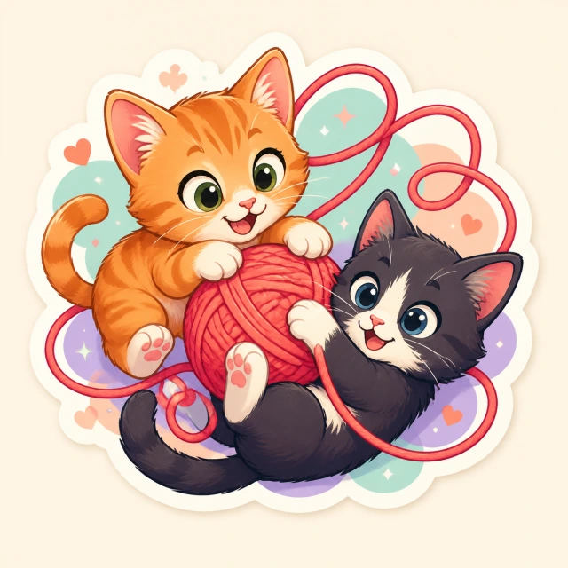

404 · loose thread
This yarn goes nowhere.
The page moved, never existed, or escaped the declared topology.
Follow the yarn home
404 · loose thread
The page moved, never existed, or escaped the declared topology.
Follow the yarn home